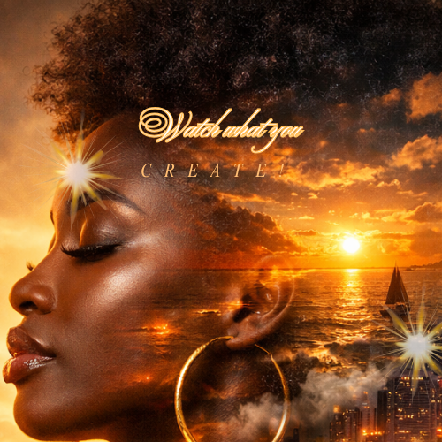

Build ultra-luxurious surreal portrait prompts inspired by gothic fantasy couture, moonlit magic, enchanted forests, crystal instruments, glowing particles, castle fog, sapphire florals, and cinematic dark-fairytale beauty. Every dropdown starts with None, and the rest are alphabetized.
Add any extra detail you want included in both the photo prompt and video script.